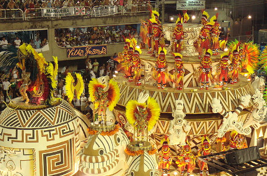
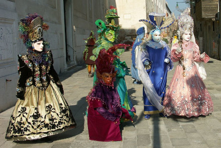
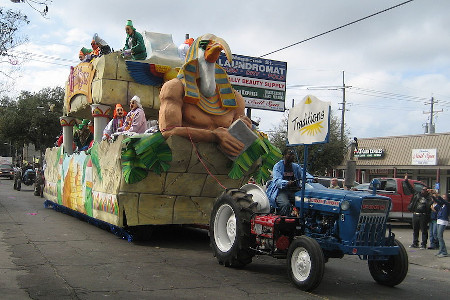
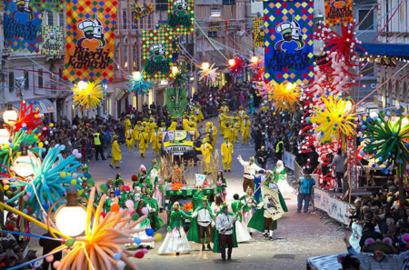
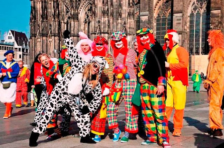

Karneválok
A karnevál valójában ősi télbúcsúztató, tavaszköszöntő jelmezes, táncos népünnepély, amelyet beiktattak a vallási ünnepek közé. A farsang hagyományosan vízkereszttől húshagyókeddig tart. Ebben az értelemben a farsangi karnevált mint jelmezes, táncos népünnepélyt a húsvétot megelőző 47. napon, húshagyókedden rendezik meg és még aznap éjfélkor, a hamvazószerda beköszöntekor befejeződik.
A carnevale szó a "carne" (latin) "hús" szóból és a "levare" vagy "vale" (latin) "elhagyni", illetve "búcsúzom/~isten veled" szavakból eredeztethető: "búcsúzás a hústól".
Leghíresebb karneválok

Riói karnevál
A Riói karnevál nagy múltra tekint vissza, de jelenlegi formájában 1928 óta rendezik meg.
A farsangi szezon alatt Rio de Janeiro néhány napra a világ fővárosává válik. Ekkor rendezik meg ugyanis a riói karnevált. A parádén a látványos jelmezek mellett a szamba is főszerepet kap, hiszen ilyenkor mérik össze tudásukat a legjobb szambaiskolák táncosai a brazil farsang főutcáján, a több mint másfél kilométeres Sambadronon.

Velencei karnevál
A velencei karnevál világszerte ismert, ősi hagyományokra épül, a gondolák és a lagúnák városában.A velencei karnevál hamvazószerda előtt két héttel kezdődik, és hamvazószerda előtti napon, húshagyókedden ér véget. Ezen a napon a város apraja-nagyja csónakra, bárkára, tutajokra száll és egész nap, illetve éjszaka ott tartózkodik. Mindenki a vízen ebédel és vacsorázik, állandó zeneszó kísérete mellett. A hajnalt is a vízen kell megérni, mert a hagyomány szerint aki a „redentore hajnalán” az Adria vizével vetett magára keresztet, az egész évre mentesül a betegségektől.

New Orleans-i karnevál
A New Orleans-i karnevált „Mardi Gras”-nak is nevezik. Dixielandben rendezik húshagyó kedden a világhírű karnevált. Ezt a latinos, könnyed zenére és a vidámságra hajlamos itteni lakosság készíti elő. Évente százezrek vonulnak fel a Canal Streeten néhány órás önfeledt ünneplésre. Ugyanis éjfélkor véget ér a bolondozás és a móka.

Fiumei karnevál
A Fiumei Karnevál egy hagyományos tavaszi karnevál. Ezt korábban a magyar, osztrák, német, orosz nemesek szervezték maguknak a 19. században, ma Európa nagy karneváljai közé sorolják. Gyermek és felnőtt csapatok vonulnak fel a százezres közönség előtt.
Busójárás
A busójárás (horvátul: pohod bušara) egy tavaszváró, téltemető népszokás a Mohácson és környékén élő, többségükben római katolikus délszlávok, a sokácok farsangi maszkos alakoskodása és dramatikus néphagyománya, amelyet a sokácok poklade néven is neveznek, ami a karnevál szó horvát megfelelője.
A mohácsi busójárás 2009-től szerepel az UNESCO szellemi örökség reprezentatív listáján. 2012 óta a mohácsi busójárás hungarikumnak számít, ami elsősorban a mohácsi civil társadalom, a busócsoportok, a maszkfaragók és jelmezkészítők sikere.
A Busójárás érdekességei

Kölni Karnevál
A kölni karnevált minden évben Németországban, Köln városában rendezik meg. A Rajna parti népünnepély első napja a „nők farsangja”: ekkor ugyanis a hölgyek egész nap karneváli jelmezbe öltöznek. Innentől kezdve egészen hamvazószerdáig éjjel-nappal tart az ünneplés az utcákon, tereken és a kocsmákban egyaránt. Ez a világ egyik legnagyobb hagyományőrző ünnepélye, amelyet a helybéliek ötödik évszaknak neveznek.